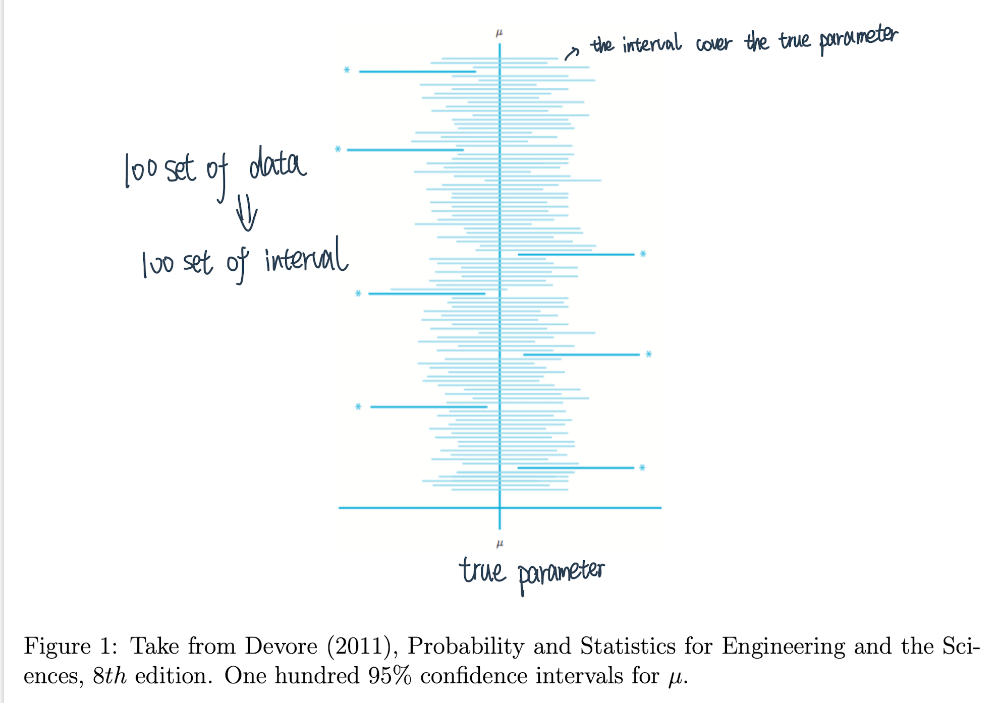

统计分析
Contents
统计分析¶
统计推断¶
假设检验和参数估计是推断统计的两个组成部分，都是利用样本对总体进行某种推断。
区别：两者进行推断的角度不同
参数估计讨论的是用样本统计量估计总体参数的一种方法，总体参数在估计前是未知的。
假设检验，则是对总体参数先提出一个假设，然后用样本信息去检验这个假设是否成立。
联系
都是以抽样分布为理论依据：参数估计是以样本资料估计总体参数的真值，而假设检验是以样本资料对总体的先验假设是否成立
两者有duality：outside \(1-\alpha\) CI \(\Leftrightarrow\) reject Ho with level \(\alpha\)
是一个问题的两面：whether to reject a test or not can be determined by whether the ‘dual’ confidence interval covers the parameter of interest.
Theorem (Duality of confidence intervals and hypothesis tests I). Let \([L(X), U(X)]\) be a \((1-\alpha)\) level confidence interval for parameter \(\theta\). Then the test defined with rejection region \(\left\{\theta_{0} \notin[L(X), U(X)]\right\}\) is a hypothesis test with significance level \(\alpha\), where null hypothesis \(H_{0}: \theta=\theta_{0}\) and alternative hypothesis \(H_{1}: \theta \neq \theta_{0}\).
证明：\(\mathbb{P}_{\theta_{0}}\left(\right.\) reject \(\left.H_{0}\right)=\mathbb{P}_{\theta_{0}}(\theta \notin[L(X), U(X)])=1-\mathbb{P}_{\theta_{0}}(\theta \in[L(X), U(X)]) \leq 1-(1-\alpha)=\underline{\alpha}\)
所以还有一个用假设检验来构造置信区间的方法——把拒绝不了的组成一个区间！
Theorem (Duality of confidence intervals and hypothesis tests II). For each \(\theta_{0} \in \Theta\), let \(\mathbf{A}\left(\theta_{0}\right)\) be the acceptance region of a level \(\alpha\) test of \(H_{0}: \theta=\theta_{0}\). For data \(\mathbf{X}=\left(X_{1}, \ldots, X_{n}\right)\), define \(C(X)\) in the parameter space by $\( C(X)=\left\{\theta_{0} \in \Theta: \mathbf{X} \in \mathbf{A}\left(\theta_{0}\right)\right\} . \)$
参数估计¶
https://blog.csdn.net/liuyuemaicha/article/details/52497512
用样本统计量去估计总体的参数。
分类
点估计：依据样本估计总体分布中所含的未知参数或未知参数的函数。
区间估计（置信区间的估计）：依据抽取的样本，根据一定的正确度与精确度的要求，构造出适当的区间，作为总体分布的未知参数或参数的函数的真值所在范围的估计。例如人们常说的有百分之多少的把握保证某值在某个范围内，即是区间估计的最简单的应用。
估计方法
矩估计法：
矩估计法的理论依据是大数定律，主要基于用样本矩估计总体矩的思想
矩的理解：在数理统计学中一类数字特征称为矩。
极大似然估计总结
似然函数直接求导一般不太好求,一般得到似然函数L(θ)之后,都是先求它的对数,即ln L(θ),因为ln函数不会改变L的单调性
对ln L(θ)求θ的导数,令这个导数等于0,得到驻点.在这一点,似然函数取到最大值,所以叫最大似然估计法
本质原理：似然估计是已知结果去求未知参数，对于已经发生的结果（一般是一系列的样本值）既然他会发生说明在未知参数θ的条件下，这个结果发生的可能性很大。
所以最大似然估计求的就是使这个结果发生的可能性最大的那个θ，这个有点后验的意思
置信度、置信区间
置信区间是我们所计算出的变量存在的范围，置信水平就是我们对于这个数值存在于我们计算出的这个范围的可信程度。
举例来讲，有95%的把握，真正的数值在我们所计算的范围里。
在这里，95%是置信水平，而计算出的范围，就是置信区间。
如果置信度为95%， 则抽取100个样本来估计总体的均值，由100个样本所构造的100个区间中，约有95个区间包含总体均值
置信区间的错误理解方式：给定数据下被估计值在置信区间的概率❌
data给定了，interval就会给丁
正确理解置信度（confidence level）：样本所构造的置信区间能够覆盖到真\(\theta_{0}\)的概率至少是α 换句话说我抽100次样就会有5次不在里面

两类错误：
假设检验¶
思想：通过“小概率事件在少量实验中是几乎不可能出现的”这一结论，去反证假设是错误的、假设的另一面很可能是正确的。
概念：
原假设，也叫零假设H0一般是一个正命题，反面则是
备择命题H1，如果拒绝了原假设那么就证明了备择命题是正确的
P值，P值就是当原假设为真时，比所得到的样本观察结果更极端的结果出现的概率。
如果P值很小，说明原假设情况的发生的概率很小，而如果出现了，根据小概率原理，我们就有理由拒绝原假设，P值越小，我们拒绝原假设的理由越充分
例：双侧检验硬币公平得到8次正面：把八次正面的概率，与更极端的九次正面、十次正面的概率，以及012的加起来，在0.5的情况下只有0.1，这个就是p值
两类错误：
第一类错误\(\alpha\): 即弃真错误。尽管小概率事件很难发生，但毕竟概率不为 0 ，也许原假设是正确的，但根据小概率事件原则我们拒绝了原假设
第二类错误\(\beta\)：即取伪错误。在假设检验中我们没有拒绝原本是错误的原假设，因为有 时候原假设尽管是错误的但非常接近真实值
错误权衡：如果我们想要降低 \(\alpha\) 的概率，也就是意味着提高拒绝条件使原假设不那么容易被拒绝｜与此同时，错误的原假设也不容易被拒绝⇒相当于提高了 \(\beta\) 值
所以二者不可能同时降低的，一般来说我们是控制 \(\alpha\) 而放任 \(\beta\) （宁可错杀好的H1 也不会拒绝正确的H0，可以类比ABtest）
步骤总结
先根据实际情况的要求提出一个论断, 称为原假设 \(\mathrm{Q}\) 或零假设, 记为 \(H_{0}\) 。同时提出一个互为反 命题的备择假设, 记为 \(H_{1}\),
在 \(H_{0}\) 正确的条件下, 求出样本数据出现的概率, 看已知的样本是不是小概率事件,
如果样本是小概率事件, 那么就认为原假设错误, 即拒绝原假设, 否则就是接受原假设。
判定一个事件是否为小概率事件的基本原则：当 \(p\) 值小于等于 \(\alpha\) 时, 我们的样本为小概率事件
临界值检验法: 简单来说就是根据样本构造合适的统计量后, 根据 \(\alpha\) 和统计量所服从的概率分布 求得临界值, 一般临界值都满足一个特性, 那就是 \(p=\alpha\)，求得临界值后, 可以将统计量与该 临界值进行比较。如果统计量与原假设的偏差大于等于临界值与原假设的偏差, 那么当前样本就 与临界值一样极端或者更极端, 其 \(p\) 值也就会小于等于 \(\alpha\)所以我们就认为当前样本为小概率事 件，从而拒绝原假设
显著性检验法：开始同样构建一个用于检验的统计量, 与临界值法不同的是, 我们直接根据原假 设和统计量的概率分布求解其 \(p\) 值, 然后将 \(p\) 值与 \(\alpha\) 进行比较, 从而判定样本是否为小概率事件
对于原假设和备择假设假设的选择原则：
假设应该是受保护的，不能轻易被拒绝;
备择假设是检验者所希望的结果;
等号永远出现在原假设中。
常用检验形式：
T检验¶
T检验是一种适合小样本的统计分析方法，通过比较不同数据的均值，研究两组数据是否存在差异。
**场景：**主要用于样本含量较小（例如n < 30），总体标准差σ未知的正态分布
类型
单一样本t检验：比较样本的情况和总体的情况有无差异
在总体服从正态分布 \(N\left(\mu, \sigma^{2}\right)\) 的情况下, 比较总体均值 \(\mu\) 是否与指定的检验值 \(\mu_{0}\) 存在显著性差异
原假设：（双尾, 如果是单尾原假设, 即 \(\mu_{0} \geq \mu\) 或 \(\mu_{0} \leq \mu\), 备择假设为互逆命题） \(H_{0}: \mu=\mu_{0}\)
\(t=\frac{\bar{X}-\mu_{0}}{s / \sqrt{n}} \sim t(n-1)\) 其中 \(s=\sqrt{\frac{1}{n-1} \sum_{i}^{n}\left(x_{i}-\bar{x}\right)^{2}}\) 为样本标准差，样本容量为 \(n\), 样本均值为 \(\bar{X}\),
在原假设成立的条件下服从t分布
配对样本t检验：比较样本某个状况前后的对比有无差异
当两样本并不互相独立时候, 我们可以使用配对样本 \(t\) 检验对两个总体的均值差异进行检验。比如研究夫妻之间的人均消费差异/减肥前后
\(H_{0}: d=\mu_{1}-\mu_{2}=0\)
检验统计量为: \(t=\frac{\bar{d}}{s_{d} / \sqrt{n}} \sim t(n-1)\)
\(\bar{d}\) 为配对样 本中各元素对应的差值, \(s_{d}\) 为差值的标准差, \(n\) 为配对数
两样本t检验：比较两组样本有无差异
用于检验两个服从正态分布的总体均值是否存在显著性差异, 假设两个总体分布分别为\(N\left(\mu_{1}, \sigma_{1}^{2}\right)\) 和 \(N\left(\mu_{2}, \sigma_{2}^{2}\right)\)
原假设为 \(H_{0}: \mu_{1}=\mu_{2}\), 那么由正态分布可加性 \(\left(x_{1}+x_{2}+\ldots+x_{n}\right) \sim N\left(n \mu, n \sigma^{2}\right)\), 则 \(\bar{x} \sim N\left(\mu, \frac{\sigma^{2}}{n}\right)\)
对于两独立样本有 \(\overline{x_{1}}-\overline{x_{2}} \sim N\left(\mu_{1}-\mu_{2}, \frac{\sigma_{1}^{2}}{n_{1}}+\frac{\sigma_{2}^{2}}{n_{2}}\right)\), 简化其中推导我们直接给出其检验统计量为 \(\frac{\left(\overline{x_{1}}-\overline{x_{2}}\right)-\left(\mu_{1}-\mu_{2}\right)}{\sqrt{s_{p}\left(\frac{1}{n_{1}}+\frac{1}{n_{2}}\right)}} \sim t\left(n_{1}+n_{2}-2\right)\),
这里的 \(s_{p}=\frac{\left(n_{1}-1\right) s_{1}^{2}+\left(n_{2}-1\right) s_{2}^{2}}{n_{1}+n_{2}-2}\) 为混合标准差
Z检验¶
场景：知道总体的标准差、适用于大样本
类型：
单样本 \(z\) 检验：统计量 \(z=\frac{\bar{x}-\mu}{\sigma / \sqrt{n}}\) ，一般原假设（双尾） 还是设为 \(H_{0}: \mu=\mu_{0}\)
双样本检测原理跟同理 \(t\) 检验
F检验¶
检验方差相等的多个正态总体均值是否相等，进而判断各因素对试验指标的影响是否显著。F检验又叫方差齐性检验
主要研究的是一个因子对反应变量的影响
如果发现这两个行业的股票收益率有显著差异，则可有一下结论：行业是影响股票收益率的一个重要因素。
方差分析要满足以下两点：
样本是从服从正态分布的总体中独立抽取出来的,
不同反应变量的总体方差是大致相同的（方差一致性)
步骤：
根据感兴趣的因子的不同取值水平，将反应变量分为 \(M\) 个组,
提出原假设\(H_{0}\) ：因子对于反应变量均值没有影响; 备择假设 \(H_{1}\) : 因子对于反应变量均值有影响,
求出样本数据中每组样本的平均值和全体样本的平均值，算出组内均方差MSF和组间均方差 MSE,
构建统计量 \(\varphi=\frac{M S F}{M S E} \sim F(M-1, N-M)\), 其中 \(F\) 为 \(F\) 分布,
由显著性水平 \(\alpha\) 的取值, 查 \(F\) 分布表的临界值 \(F_{\alpha}(M-1, N-M)\) 来判断是接受还是拒绝原假设。
场景：
方差齐性检验（F-test of equality of variances）
记两独立总体为：\(X_{1} \sim N\left(\mu_{1}, \sigma_{1}^{2}\right), \quad X_{2} \sim N\left(\mu_{2}, \sigma_{2}^{2}\right)\)
从两总体中抽取的样本为：\(X_{1 i}\left(i=1,2, \cdots, n_{1}\right), \quad X_{2 j}\left(j=1,2, \cdots, n_{2}\right)\)
定义样本均值和样本方差： $\( \begin{aligned} \bar{X}_{1}=\frac{1}{n_{1}} \sum_{i=1}^{n_{1}} X_{i 1}, \quad & s_{1}^{2}=\frac{1}{n_{1}-1} \sum_{i=1}^{n_{1}}\left(X_{i 1}-\bar{X}_{1}\right)^{2} \\ \bar{X}_{2}=\frac{1}{n_{2}} \sum_{i=1}^{n_{2}} X_{i 2}, \quad & s_{2}^{2}=\frac{1}{n_{2}-1} \sum_{i=1}^{n_{2}}\left(X_{i 2}-\bar{X}_{2}\right)^{2} \end{aligned} \)$
方差齐性双侧检验的原假设和备择假设： \(H_{0}: \sigma_{1}^{2}=\sigma_{2}^{2}\), 即两总体方差相等 \(H_{1}: \sigma_{1}^{2} \neq \sigma_{2}^{2}\), 即两总体方差不等
由 \(F\) 分布的构造定义：
\[ \frac{s_{1}^{2} / \sigma_{1}^{2}}{s_{2}^{2} / \sigma_{2}^{2}} \sim F\left(n_{1}-1, n_{2}-1\right) \]方差分析（Analysis of Variance, ANOVA）
接着我们给出方差分析的基本假定：每一水平的总体服从均值为0的正态分布且各总体方差相等, 即： \(y_{i j} \sim N\left(\mu_{i}, \sigma^{2}\right) \quad i=1,2, \cdots, r\), 且 \(y_{i j}\) 相互独立。我们取各个总体的均值: \(\mu_{1}, \mu_{2}, \cdots, \mu_{r}\),
现在做出假设: \(H_{0}: \mu_{1}=\mu_{2}=\cdots=\mu_{n}\) \(H_{1}: \mu_{1}, \mu_{2}, \cdots, \mu_{r}\) 不全相等
\(\frac{S S A /(r-1)}{S S E(n-r)} \sim F(r-1, n-r)\) SSE是组内偏差平方和｜SSA是组间偏差平方和
线性回归方程整体的显著性检验：回归分析检定整哥回归模型是否具有解释力
\(F=\frac{S S R / p}{S S E /(n-p-1)}\)
卡方检验¶
比较两个及两个以上样本率( 构成比）以及两个分类变量的关联性分析，通过频数进行检验的方法。
交叉表卡方：研究两组分类变量的关系：如性别与看不看直播是否有关系。
\(\chi^{2}=\sum \frac{(A-T)^{2}}{T}=\sum_{i}^{k} \frac{\left(f_{o}-n p_{i}\right)^{2}}{n p_{i}}\)
若各理论数与相应实际数相差越小，卡方值越小；如两者相同，则卡方值必为零，而卡方永远为正值
概率论¶
贝叶斯相关¶
条件概率：
\(P(X|Y)\)含义： 表示\(Y\)发生的条件下\(X\)发生的概率。
先验概率
**表示事件发生前的预判概率。**这个可以是基于历史数据统计，也可以由背景常识得出，也可以是主观观点得出。一般都是单独事件发生的概率，如 \(P(X)\)
后验概率
基于先验概率求得的反向条件概率，形式上与条件概率相同(若\(P(X|Y)\) 为正向，则\(P(Y|X)\) 为反向)
联合概率：事件\(X\)与事件\(Y\)同时发生的概率
贝叶斯公式
- \[\begin{split} P(Y|X) = \frac{P(X|Y) P(Y)}{P(X)} \\ \end{split}\]
\(P(Y)\) 叫做先验概率：事件\(X\)发生之前，我们根据以往经验和分析对事件\(Y\)发生的一个概率的判断
\(P(Y|X)\) 叫做后验概率：事件\(X\)发生之后，我们对事件\(Y\)发生的一个概率的重新评估
\(P(Y,X)\)叫做联合概率：事件\(X\)与事件\(Y\)同时发生的概率。
先验概率和后验概率是相对的。如果以后还有新的信息引入，更新了现在所谓的后验概率，得到了新的概率值，那么这个新的概率值被称为后验概率。
相关系数¶
皮尔森相关系数 (Pearson) : 衡量了两个连续型变量之间的线性相关程度, 要求数据连续变量的取值服从正态分布
$\(
\rho_{X, Y}=\frac{\operatorname{cov}(X, Y)}{\sigma_{X} \sigma_{Y}}=\frac{E\left[\left(X-\mu_{X}\right)\left(Y-\mu_{Y}\right)\right]}{\sigma_{X} \sigma_{Y}}
\)$
要求：
两个变量之间是线性关系，都是连续数据。
两个变量的总体是正态分布，或接近正态的单峰分布。
两个变量的观测值是成对的，每对观测值之间相互独立。
实验数据通常假设是成对的来自于正态分布的总体。为啥通常会假设为正态分布呢？因为我们在求皮尔森相关性系数以后，通常还会用t检验之类的方法来进行皮尔森相关性系数检验，而 t检验是基于数据呈正态分布的假设的实验数据之间的差距不能太大，或者说皮尔森相关性系数受异常值的影响比较大
斯皮尔曼相关系数（Spearman）：衡量两个变量之间秩次（排序的位置）的相关程度, 通常用于计算离散型数据、分类变量或等级变量之间的相关性, 对数据分布没有要求
$\(
\rho=\frac{\sum_{i}\left(x_{i}-\bar{x}\right)\left(y_{i}-\bar{y}\right)}{\sqrt{\sum_{i}\left(x_{i}-\bar{x}\right)^{2} \sum_{i}\left(y_{i}-\bar{y}\right)^{2}}} .
\)$
不用计算X和Y这两个变量具体的值到底差了多少，只需要算一下它们每个值所处的排列位置的差值，就可以求出相关性系数了
同时即便在变量值没有变化的情况下，也不会出现像皮尔森系数那样分母为0而无法计算的情况
由于异常值的秩次通常不会有明显的变化（比如过大或者过小，那要么排第一，要么排最后），所以对斯皮尔曼相关性系数的影响也非常小
肯德尔相关系数 (Kendall's Tau-b) : 用于计算有序的分类变量之间的相关系数, 和斯皮尔曼相关系数相似, 在样本较小时（比如小于12）更为精确
$\(
\tau=\frac{(\text { number of concordant pairs })-(\text { number of discordant pairs })}{n(n-1) / 2} .
\)$
也是一种秩相关系数，不过所计算的对象是有序分类变量,当样本已经按其中一个特征升序排列后，对于每个样本，我们可以简单的数一下该样本后续样本中另一特征大于该样本的特征的样本数量，作为该样本引入的一致对数 (该样本之前的样本与该样本也可能一致，但是已经算过一次了)
协方差与相关系¶
协方差：
协方差表示的是两个变量的总体的误差，这与只表示一个变量误差的方差不同。 如果两个变量的变化趋势一致，也就是说如果其中一个大于自身的期望值，另外一个也大于自身的期望值，那么两个变量之间的协方差就是正值。 如果两个变量的变化趋势相反，即其中一个大于自身的期望值，另外一个却小于自身的期望值，那么两个变量之间的协方差就是负值。
相关系数：
研究变量之间线性相关程度的量，取值范围是[-1,1]。相关系数也可以看成协方差：一种剔除了两个变量量纲影响、标准化后的特殊协方差。
可参考
大数定律¶
大数定理简单来说，指得是某个随机事件在单次试验中可能发生也可能不发生，但在大量重复实验中往往呈现出明显的规律性，即该随机事件发生的频率会向某个常数值收敛，该常数值即为该事件发生的概率。
**伯努利大数定理：**从定义概率的角度，揭示了概率与频率的关系，当N很大的时候，事件A发生的概率等于A发生的频率。
辛钦大数定理：揭示了算术平均值和数学期望的关系
切比雪夫大数定律：揭示了样本均值和真实期望的关系
中心极限定理¶
中心极限定理定义：
（1）任何一个样本的平均值将会约等于其所在总体的平均值。
（2）不管总体是什么分布，任意一个总体的样本平均值都会围绕在总体的平均值周围，并且呈正态分布。
中心极限定理作用：
（1）在没有办法得到总体全部数据的情况下，我们可以用样本来估计总体。
（2）根据总体的平均值和标准差，判断某个样本是否属于总体。
p值的含义¶
基本原理只有3个：
1、一个命题只能证伪，不能证明为真
2、在一次观测中，小概率事件不可能发生
3、在一次观测中，如果小概率事件发生了，那就是假设命题为假
证明逻辑就是：我要证明命题为真->证明该命题的否命题为假->在否命题的假设下，观察到小概率事件发生了->否命题被推翻->原命题为真->搞定。
结合这个例子来看：证明A是合格的投手-》证明“A不是合格投手”的命题为假-》观察到一个事件（比如A连续10次投中10环），而这个事件在“A不是合格投手”的假设下，概率为p，小于0.05->小概率事件发生，否命题被推翻。
可以看到p越小-》这个事件越是小概率事件-》否命题越可能被推翻-》原命题越可信
正态分布¶
怎么向小孩子解释正态分布

（随口追问了一句小孩子的智力水平，面试官说七八岁，能数数）
拿出小朋友班级的成绩表，每隔2分统计一下人数（因为小学一年级大家成绩很接近），画出钟形。然后说这就是正态分布，大多数的人都集中在中间，只有少数特别好和不够好
拿出隔壁班的成绩表，让小朋友自己画画看，发现也是这样的现象
然后拿出班级的身高表，发现也是这个样子的
大部分人之间是没有太大差别的，只有少数人特别好和不够好，这是生活里普遍看到的现象，这就是正态分布
统计方法¶
Non-negative matrix factorization (NMF)¶
一种利用矩阵因子化将高维离散矩阵分解为两个低维矩阵，从而实现降维、分层的算法
各种回归的形式¶
Functional Form |
Marginal Effect |
Elasticity |
|
|---|---|---|---|
Linear |
Y=beta_(0)+beta_(1)X |
beta_(1) |
beta_(1)X//Y |
Linear-log |
Y=beta_(0)+beta_(1)ln X |
beta_(1)//X |
beta_(1)//Y |
Quadratic |
Y=beta_(0)+beta_(1)X+beta_(2)X2 |
beta_(1)+2beta_(2)X |
(beta_(1)+2beta_(2)X)X//Y |
Log-linear |
ln Y=beta_(0)+beta_(1)X |
beta_(1)Y |
beta_(1)X |
Double-log |
ln Y=beta_(0)+beta_(1)ln X |
beta_(1)Y//X |
beta_(1) |
Logistic |
ln[Y//(1-Y)]=beta_(0)+beta_(1)X |
beta_(1)Y(1-Y) |
beta_(1)(1-Y)X |
Elasticity $\( \eta_{y, x}=\frac{\% \Delta Y}{\% \Delta X}=\frac{\Delta Y / Y}{\Delta X / X}=\frac{\Delta Y}{\Delta X} \frac{X}{Y} \)\( \% change in \)Y\( with respect to a \)%\( change in \)X\( for a small change in \)X$
Marginal effect \(=\Delta Y / \Delta X\) the change in \(Y\) per unit change in \(X\)
\[\begin{split} \begin{array}{r} \ln \left(Y_{i t}\right)=Y_{b}-1 \\ \ln \left(Y_{i t}\right)-\ln \left(Y_{i, t-1}\right)=\ln \left(\frac{Y_{i t}}{Y_{i, L-1}}\right) \\ \frac{Y_{k,}-1}{Y_{i t-1}} \\ \frac{Y_{i t}-Y_{i t-1}}{Y_{i, t-1}} \end{array} \end{split}\]\(\operatorname{Ln}(X)\) : The change in \(Y\) (in units)related to a \(1 \%\) increase in \(X\) \(\operatorname{Ln}(Y)\) : The precent change in \(Y\) related to a one-unit increate in \(X\)
格兰杰因果检验¶
检查X是否有助于Y的增长
Spatial Panel data analysis¶
Model specification could be a mixed structure of spatial lag and spatial error model.
Unobserved heterogeneity could be fxed effects or random effects.
OLS is biased and inconsistent; Consistent IV or 2SLS should be used, with robust inference.
If normality assumption of the model is maintained, efficient ML estimation could be used but with computatlonal complexity.
Efflclent GMM estimation is recommended.
案例：比如微信公众号流量影响微信视频号流量有溢出效应